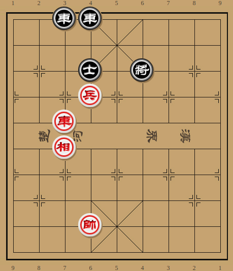
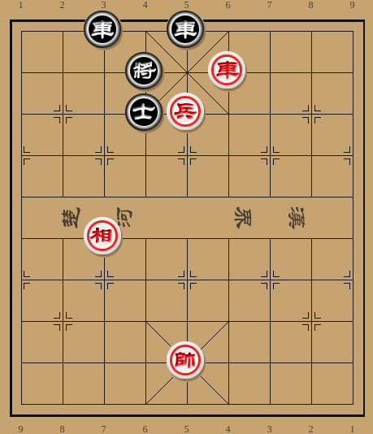
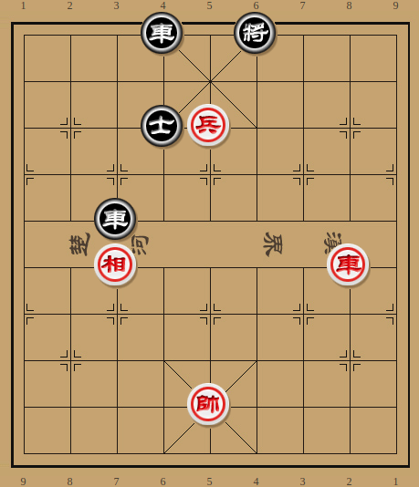
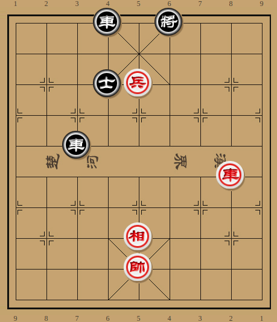
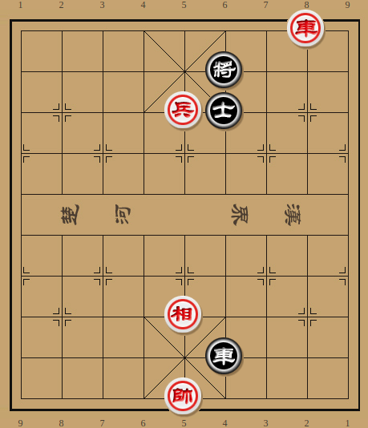

One minute
排局-03

2rr5/9/3a1k3/3P5/2R6/2B6/9/9/3K5/9 w
如图，黑方将位不安，且双车略背，红方如何凭借先行之利取胜？
按照惯例，首先分析一路不成熟的攻势，打将之后占中做杀：
- 车七平四 将６平５
- 车四平五 将５平６
- 帅六平五 车４平５
- 兵六平五 将６退１
红方平兵继续叫杀，黑方当然不能直接车5进3砍兵，否则红方顺势车五进一吃掉之后即是绝杀。黑如车3进4弃车解杀，则红方兵五平四之后吃掉底车，仍是胜势。黑方下将正着，红如兵五进一，黑方便可以车5进2某得和局。
- 车五平四 将６平５
- 兵五进一 将５平４
- 车四进三 将４退１
红劣黑胜

黑方下将是一步容易被忽略的着法。最初算到这里的时候我以为黑方只能落士，红兵五进一之后由于黑车低头，形成巧胜。不料黑方有此着躲避，从而反败为胜。 所以红方正确的攻法是打两将之后平兵叫杀：
- 车七平四 将６平５
- 车四平五 将５平６
- 兵六平五 将６退１
黑方当然不能士4退5打将，否则红方帅六平五占中之后，黑方速败。
- 兵五进一 将６退１
- 车五平四 将６平５
- 车四平二 将５平６
此时红方走不到兵五平四做杀，因为黑方可以士4退5带将抽掉。又不能帅六平五，否则黑方车3进5弃车杀相可以谋和。红方攻势暂时受阻，怎样才能打开局面呢？
- 车二进四 将６进１
- 车二退五 将６退１
红方借叫杀之机保住自己的高相，使得黑方杀相谋和的计划落空。但此时平帅黑方还是可以车3进4通头，下步即可以抢占中路，红方似乎还是难有进取。
- 帅六平五 车３进４
如图形势，红方有两路较为直观的攻法，但都难以奏效：

a.
- 兵五平四 车４平５！
- 相七退五 车３进４
- 帅五退一 车５进７ 黑胜
黑方车4平5妙手，粉碎了红方的攻势，一举反败为胜
b.
- 车二平四 将６平５
- 帅五平四 士４退５
- 车四进四 车３平６!
- 车四退三 车４进８
- 帅四进一 车４平５
- 相七退五 车５进１!
- 帅四退一 车５退２
黑方弃车照将的手法颇有排局味道，且即使红方落相盖车，黑方还是有沉底车的冷手，最终谋得和局。
红方的正确走法并不起眼：
- 相七退五

红方一手轻巧的落相，同时威胁兵五平四绝杀和车二进五抽车，黑方立感不妙。第一感是车4平3，似乎既能解杀，又给车生根。其实不然，红用传统攻法获胜：
- …… 车４平３
- 车二平四 将６平５
- 帅五平四 士４退５
- 车四进四 红胜定
与前面弃车解杀的b变相比，此时红相已在中路，黑方抢不到中路，必败无疑。
于是黑方只有丢车保帅，车3平6弃车，而后负隅顽抗：
- …… 车３平６
- 车二进五 将６进１
- 车二平六 士４退５
黑落士后，红如心急误走车六退一，则黑方车6平5巧和！
- 车六平二 车６进４
- 帅五退一 士５进６

困兽犹斗，此时红方已是必胜局面，但若是不得门道，恐怕难有突破。
- 车二退九 车６退１
- 帅五进一 车６退４
- 车二进一 将６退１
- 车二平四 车６进５
- 帅五平四 红胜定
回看全局，红方打将顿挫保相而后进帅落相，可谓手筋，值得玩味。